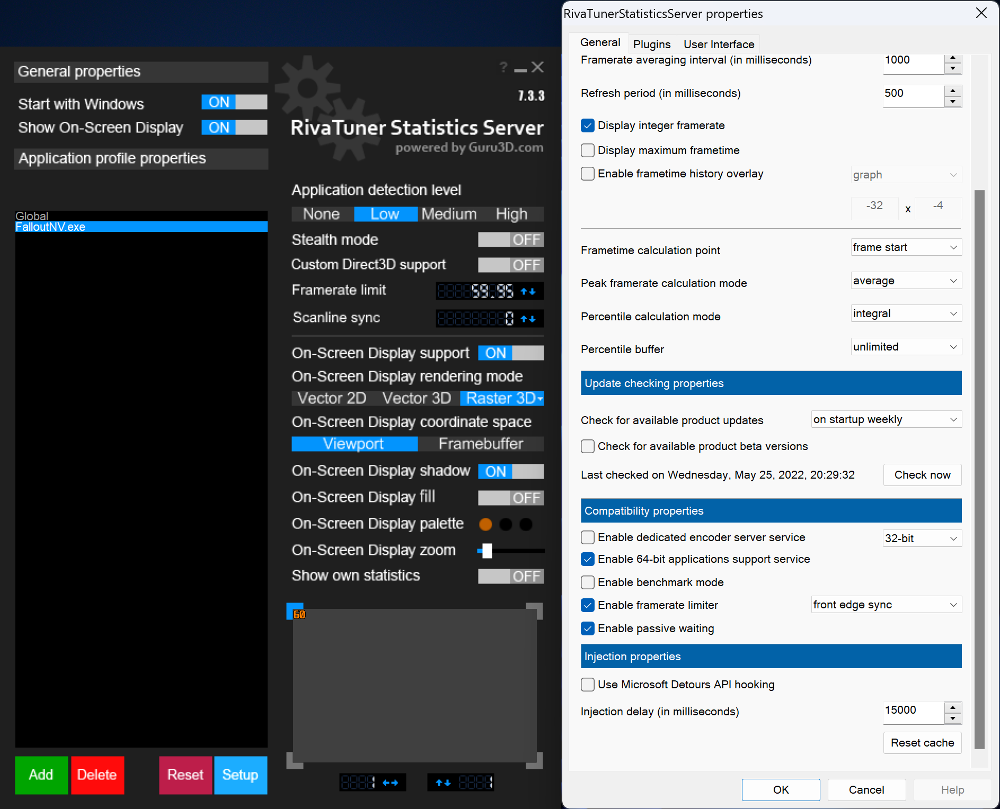

비공식 한국어 번역
이 페이지는 ModdingLinked의 Fallout: New Vegas Performance Guide를 한국어로 옮긴 것입니다.
원본 내용과 제작자는 원본 Performance Guide에서 확인할 수 있습니다.
한국어 VNV 가이드로 돌아가려면 Viva New Vegas 한국어 가이드를 이용하세요.
소개
환영합니다!
이 가이드의 목표는 보다 현대적인 기술과 조정을 이용해 Fallout: New Vegas의 낮은 성능을 개선하고, 엔진 특유의 문제와 주의점을 이해할 수 있게 하는 것입니다.
이 가이드는 기본적으로 Viva New Vegas의 Utilities 또는 The Best of Times의 Essentials를 완료했다는 전제로 작성되어 있습니다. 다만 해당 가이드에 포함된 성능 관련 모드도 여기서 다시 설명합니다.
이 가이드는 Fallout: New Vegas를 중심으로 하지만, 설명하는 내용 상당수는 다른 게임에도 적용할 수 있습니다.
내용이 매우 길어 보일 수 있지만 질문과 혼란을 줄이기 위해 가능한 한 자세히 설명하기 때문입니다. PC 하드웨어와 설정에는 생각보다 많은 예외와 함정이 있습니다.
대부분의 약어는 용어 항목에서 설명하며 약어 위에 마우스를 올리면 전체 명칭을 확인할 수 있습니다.
이해하기 어려운 부분이 있다면 Discord에서 질문할 수 있습니다.
왜 필요한가요?
솔직히 말해 이 엔진은 최신 환경에 잘 맞지 않습니다. 렌더러는 현재 기준으로 22 년이나 된 DirectX 9 기반이라 최신 GPU와 Windows 환경에 잘 맞지 않습니다. 효율이 낮고 CPU 병목이 심하며 화면 표시 방식·메모리 처리·전반적인 안정성에도 문제가 있습니다.
Bethesda의 코드 역시 최신 CPU 성능을 제대로 활용하지 못하며 이런 특성은 비교적 최근 작품에서도 볼 수 있습니다.
게다가 Fallout: New Vegas는 컴파일러 최적화 없이 빌드되어 엔진 모딩은 쉬워졌지만 전체 성능은 낮아졌습니다.
요약하면 대부분의 성능 문제는 두 단어로 설명할 수 있습니다: CPU 병목.
CPU 병목 자체를 완전히 해결할 수는 없지만 GPU와 화면 표시 방식을 조정하면 게임의 반응성과 체감 성능을 개선할 수 있습니다.
용어
알아둘 용어
-
Vertical Synchronization (V-Sync) - 화면 출력과 주사율을 동기화해 화면 찢어짐을 없애는 기술입니다. 대신 입력 지연이 늘어날 수 있습니다.
(주사율이 높을수록 지연 시간은 줄어듭니다.) - G-Sync | FreeSync - Variable Refresh Rate (VRR) Nvidia와 AMD가 각각 개발한 가변 주사율(VRR) 기술입니다. 모니터 주사율을 실제 프레임레이트에 맞춰 V-Sync의 지연을 줄일 수 있습니다.[1] .
- Multiplane Overlays (MPOs) - GPU의 하드웨어 출력 레이어입니다. 창을 겹쳐 표시하는 등의 화면 합성을 지연이나 성능 손실을 거의 늘리지 않고 처리하며 하드웨어 스케일링도 지원합니다. Windows 8.1부터 지원되며 GPU 제조사별 지원 수준은 다릅니다.
-
Input Latency (lag) - 마우스 클릭이나 키 입력부터 결과가 화면에 표시되기까지 걸리는 시간입니다. 낮을수록 게임이 더 즉각적으로 반응합니다.
지연은 GPU/CPU 사용률, 화면 모드, 프레임레이트 등 다양한 원인으로 발생하며 이 가이드에서 대부분을 다룹니다.
- 흔히 알려진 것과 달리 VRR만으로 화면 찢어짐이 완전히 사라지는 것은 아닙니다. 롤링 티어를 줄일 수는 있지만 모니터마다 차이가 있습니다. 또한 지연 감소 효과는 오직 V-Sync 범위(모니터 기본 주사율)보다 낮은 프레임레이트에서만 적용됩니다. 프레임레이트가 기본 주사율에 도달하면 VRR이 V-Sync 방식으로 동작합니다.
기술적인 설명
화면 표시 모델과 디스플레이 모드의 개념을 설명합니다. 가이드를 따라가는 데 필수는 아니지만 각 설정을 왜 사용하는지 이해하는 데 도움이 됩니다.
성능 모드
Stewie Tweaks
lStewieAl 는 로딩, 렌더링, AI 처리 등 엔진 여러 부분의 성능을 개선하는 모드를 제작했습니다.이미 Viva New Vegas 또는 The Best of Times를 따라왔다면 이 구간은 건너뛰고 바로 NVTF 설정으로 이동하세요.
설치
다음 모드를 모드 매니저로 다운로드하고 설치합니다.
- lStewieAl's Tweaks and Engine Fixes
- Stewie Tweaks - VNV INI (또는 Extended INI)
- lStewieAl's Engine Optimizations
- Faster Main Menu
New Vegas Tick Fix
NVTF는 게임 내부 타이머와 메모리 관리를 수정·개선해 끊김을 크게 줄입니다..또한 60 FPS 이상 에서도 물리 시스템이 깨지지 않게 하며 권장 상한은 120 FPS 이하입니다.
추가 DirectX 수정으로 성능 을 개선하고 메모리 사용량도 크게 줄입니다.
설치
- 모드와 INI를 여기에서 설치합니다. 앞서 말했듯 VNV 또는 TBoT 사용자는 이미 설치되어 있어야 합니다.
- 엽니다: NVTF - INI (모드 매니저에서)
- 엽니다: NVSE\Plugins\NVTF.ini
- 다음 옵션을 변경합니다:
- bModifyDirectXBehavior를 1로 설정합니다.
- bUseDefaultPoolForTextures를 1로 설정합니다.
-
D3D9은 Alt+Tab이나 절전처럼 화면 소유권을 잃으면 그래픽 장치를 잃습니다. 복구하려면 RAM에 텍스처 복사본이 있거나 메모리를 처음부터 다시 구성할 수 있어야 합니다.
Fallout: New Vegas는 대부분의 D3D9 게임처럼 첫 번째 방식을 사용합니다. 이 동작을 끄면 Alt+Tab 후 게임이 정상적으로 그래픽 상태를 복구하지 못합니다.
DXVK는 D3D9 자체를 대체해 문제를 피하고, 창 모드는 처음부터 게임이 화면을 독점하지 않기 때문에 문제가 발생하지 않습니다.
zlib Updated
Fallout: New Vegas는 BSA와 플러그인(NPC 및 Landscape 레코드)을 zlib으로 압축하는데, 이 방식은 빠른 압축 알고리즘에 속하지 않으며 게임에 포함된 버전도 매우 오래되었습니다.라이브러리만 최신 버전으로 바꿔도 압축 해제 시간을 절반가량 줄여 로딩과 끊김을 개선할 수 있습니다.
이 모드는 실제로 압축된 데이터가 있을 때만 효과가 있습니다.
2024년 이후 출시된 대부분의 모드는 플러그인 압축을 사용하지 않는 편이며 바닐라 게임 파일은 BSA Decompressor 또는 Tale of Two Wastelands.
이미 압축 해제된 데이터만 있다면 처리할 것이 없으므로 효과가 없습니다.
최근 모딩 환경에서는 다른 성능 모드만큼 필수적이지는 않습니다.
오래된 모드의 NPC/Landscape 레코드는 압축된 경우가 많아 이런 상황에서는 약간의 효과가 있습니다.
다만 플러그인 자체를 압축 해제하는 것을 권장하며 방법은 이 가이드를 따르면 쉽게 처리할 수 있습니다. 처음부터 압축을 없애는 편이 더 낫습니다.
모드 BSA는 보통 압축하지 않으며 압축되어 있다면 용량 때문에 의도적으로 적용한 경우가 많습니다. 이런 경우에는 zlib Updated를 사용하는 편이 더 적절합니다.
설치
-
다운로드: zlib Updated - NVSE 그리고 모드 매니저로 설치합니다.
Cell Offset Generator
게임 시작 시 셀 오프셋을 자동 생성해 새 셀 로딩 시 끊김을 크게 줄입니다.오프셋이 없으면 게임이 셀을 찾기 위해 모든 플러그인을 훑어야 하므로 모드가 많을수록 시간이 오래 걸립니다.
설치
-
다운로드: Cell Offset Generator - NVSE 그리고 모드 매니저로 설치합니다.
다음 게임 실행 시 초기 로딩 화면에서 진행 막대가 표시됩니다.
첫 실행은 조금 오래 걸리지만 완료되면 셀 로딩 끊김이 대부분 줄어듭니다.
생성된 오프셋은 Data\CellOffsets 폴더에 저장되므로 이후 실행은 훨씬 빨라집니다.
Depth Resolve - NVSE
수중, 대화, 킬캠 등 DoF 사용 시 가짜 깊이 버퍼를 새로 렌더링하는 대신 기존 깊이 버퍼를 resolve해 CPU와 GPU 성능을 크게 개선합니다. 다른 그래픽 효과의 필수 요구사항이기도 합니다.
일부 최신 Intel iGPU는 D3D9on12 드라이버 때문에 resolvable depth를 제대로 지원하지 않습니다.
DXVK를 사용하면 해결할 수 있습니다.
설치
-
먼저 다음 요구사항을 설치합니다:
-
다운로드: Shader Loader - NVSE 그리고 모드 매니저로 설치합니다.
-
다운로드: LOD Flicker Fix - NVSE 그리고 모드 매니저로 설치합니다.
-
다운로드: Depth of Field Fix - NVSE 그리고 모드 매니저로 설치합니다.
Viva New Vegas 에는 이미 이 모드들이 포함되어 있으므로 VNV 사용자는 이 단계를 건너뛰어도 됩니다.
-
-
다운로드: Depth Resolve - NVSE 그리고 모드 매니저로 설치합니다.
그래픽 드라이버 및 Windows
드라이버 업데이트
최상의 호환성과 성능을 위해 그래픽 드라이버는 반드시 최신 버전을 사용해야 합니다.
작업 관리자의 성능 탭에서 GPU를 확인할 수 있습니다. 왼쪽 목록의 마지막 GPU가 일반적으로 주 GPU입니다.
GPU가 표시되지 않는다면 DXVK를 사용하기에는 너무 오래된 GPU일 가능성이 큽니다.
중요 - NVIDIA 사용자:
50xx 시리즈 GPU에서 576.02~577.00 드라이버를 사용하면 DXVK.
반드시 580.88 이상 버전을 사용해야 DXVK.
중요 - AMD 사용자:
24.1.1~24.5.1 드라이버는 게임 충돌을 일으킬 수 있으므로 최신 드라이버 최소 24.6.1 이상을 사용하세요.
또는 뒤에서 설명하는 DXVK.
그래픽카드를 선택해 드라이버 다운로드 페이지로 이동 |
||
|---|---|---|
Multiplane Overlay와 Windows 워터마크
이 내용은 다음 환경에만 해당합니다: D3D9 with Fullscreen Optimizations 및 DXVK with DXGID3D9 창 모드는 이미 DWM 합성 모드이고 DXVK는 FSE.
다음 GPU를 사용한다면 이 구간을 건너뛰어도 됩니다:
- Nvidia 16 시리즈 이상
- AMD Vega 이상(단일 모니터)
- Intel 8세대 CPU 이상
Windows가 정품 인증되어 있는지 확인하세요. 워터마크가 표시되면 게임이 DWM 합성 모드로 전환되어 지연이 늘고 성능이 떨어지며 VRR이 비활성화될 수 있습니다.
GPU가 MPO (Multiplane Overlay) 를 지원하지 않는다면 Fullscreen Optimizations를 꺼서 일부 문제를 완화할 수 있습니다.
(이 방법은 최신 D3D12 게임에는 통하지 않으므로 Windows 정품 인증을 권장합니다.)
GPU의 MPO 지원 확인 방법:
- 입력: dxdiag Windows 검색창
- 선택: Save All Information 을 눌러 파일을 저장합니다.
- 파일을 엽니다: DxDiag.txt 파일에서 Ctrl+F 를 누르고 다음 항목을 찾습니다: MPO MaxPlanes
- 값이 1보다 크면GPU가 MPO를 지원합니다.
MPO를 지원하지 않는 환경에서 Windows 워터마크가 표시되면 VRR이 꺼지고 입력 지연과 끊김이 증가할 수 있습니다.
가상화
Windows 11은 시스템 및 프로세스 간 보안을 위해 가상화 기능을 사용합니다. 저사양 하드웨어에서는 일부 성능 손실이 생길 수 있습니다.
비활성화 방법은 여기서 따로 설명하지 않습니다. Microsoft에서 관련 안내를 제공했습니다..
(참고: 2025-11-14 기준 Microsoft가 원문을 내렸습니다. 향후 해당 기능이 강제되거나 동작이 변경될 가능성을 염두에 두세요.)
보안과 성능 중 무엇을 우선할지는 사용자 선택이므로 필수 단계는 아닙니다. 다만 Microsoft도 성능 저하 가능성을 인정하고 있다는 점만 알아두면 됩니다.
전원 계획과 전원 모드
Windows 10부터 Microsoft는 전원 모드를 도입해 전력 및 성능 관리에서 기존 전원 계획의 역할을 상당 부분 대체했습니다.
전원 모드가 동작하려면 균형 조정 전원 계획 이 활성화되어 있어야 합니다. 다른 전원 계획을 사용하면 전원 모드를 사용할 수 없습니다.
전원 모드를 바꾸려면 Power 설정으로 이동해 드롭다운에서 사용 가능한 가장 높은 성능 옵션을 선택합니다.
일부 오래된 시스템이나 커스텀 구성에서는 전원 모드를 선택할 수 없을 수 있습니다. 이 경우에는 균형 조정 전원 계획 만 활성화되어 있으면 됩니다.
노트북에서는 배터리/충전기 연결 상태별로 전원 모드가 따로 저장됩니다.
주의!
커스텀 전원 계획은 권장하지 않습니다. Windows 10/11의 저수준 전원 관리가 균형 조정 전원 계획 을 기준으로 동작하기 때문입니다.
커스텀 전원 계획은 최신 하드웨어의 전원 관리를 깨뜨려 소비 전력을 늘리거나 성능을 낮추고 팬 제어까지 이상하게 만들 수 있습니다.
새 계획을 만드는 것보다 균형 조정 전원 계획 을 원하는 값으로 조정하는 편이 안전합니다.
게임 모드
Windows 10에는 게임 모드라는 기능이 추가되어 시스템을 게임에 더 적합한 상태로 조정합니다.
Game Mode는 전원 모드 위에서 동작하므로 균형 조정 전원 계획이 활성화되어 있어야 합니다.
Game Mode의 주요 기능:
- DXGI 기반 게임에서 AutoHDR 활성화.
- Flip Model 게임의 VRR 최적화. 위에 겹친 다른 창이 아니라 게임 프레임레이트에 화면이 동기화되도록 합니다.
- 게임 중 Windows Update 억제.
- 알림 억제.
- Ryzen CPU 스케줄링 최적화 활성화.
Game Mode는 기본적으로 켜져 있습니다. 꺼둔 경우 여기.
DXVK
변환의 마법
DXVK는 Direct3D 9~11을 Vulkan으로 변환하는 오픈 소스 프로젝트로 Philip Rebohle (doitsujin) 및 Autumn (misyltoad)가 주도합니다. 주로 Linux용으로 만들어졌지만 Windows에서도 비공식적으로 작동합니다.
쉽게 말해 Fallout을 Vulkan API로 실행하게 해줍니다. Vulkan은 D3D9보다 draw call 오버헤드가 훨씬 낮아 이 게임의 주요 성능 병목을 줄일 수 있습니다.
Linux에서 플레이한다면 이미 DXVK를 사용 중이므로 이 구간 전체를 건너뛰어도 됩니다.
알아둘 점
DXVK와 Vulkan의 특성상 다음 사항을 알아두는 것이 좋습니다.
-
DXVK는 주로 draw call로 인한 CPU 병목 상황(예: 시야 거리, 오브젝트 수)에서 효과가 크며 해상도처럼 GPU가 병목인 상황에서는 효과가 작을 수 있습니다.
-
환경에 따라 변화가 없거나 오히려 성능이 나빠질 수도 있습니다.
-
-
초반에는 셰이더 컴파일 때문에 일시적으로 끊김이 늘어날 수 있습니다.
-
DXVK의 GPU 호환성은 제조사마다 다릅니다.
-
Nvidia GPU 노트북은 반드시 다음 기능을 사용해야 합니다: DXGI interop.
해당 기능은 데스크톱 에서는 필수는 아니지만 강력히 권장됩니다. 최적의 환경을 위해서입니다. -
AMD GPU는 반드시 다음 기능을 사용해야 합니다: DXGI interop를 사용해야 합니다. 그렇지 않으면 큰 성능 저하가 발생하거나 게임이 실행되지 않을 수 있습니다.
Windows에서는 셰이더 문제가 더 흔하게 발생할 수 있습니다. Linux에서는 상황이 반대입니다.
-
Intel GPUs 6세대 이상은 newest drivers 가 설치되어 있다면 사용할 수 있습니다.
일부 iGPU에서는 DXVK 1.10.1 이후 버전이 제대로 작동하지 않을 수 있습니다.
-
-
DXVK는 다음과 같은 시각적 문제를 만들거나 드러낼 수 있습니다.
- 투명도 멀티샘플링에 디더링이 사용됩니다. Vulkan이 alpha-to-coverage를 드라이버와 다르게 처리하기 때문입니다.
- 이 효과는 MSAA 단계가 높을수록 품질이 좋아지므로 최소 4x MSAA를 권장합니다.
- AMD RADV Linux 사용자는 다음 환경 변수를 설정해 이 동작을 비활성화할 수 있습니다: RADV_DEBUG=noatocdithering 환경 변수.
- 피 데칼은 색상 오버플로로 하얗게 보일 수 있으며 다음 모드로 수정할 수 있습니다: Blood Decal Flashing Fix
이 구간은 실제 HDR 디스플레이를 사용하는 경우에만 관련이 있으며 그 경우에도 완전히 선택 사항입니다.
설정이 다소 복잡할 수 있어 고급 사용자에게만 권장합니다.
DXVK HDR-Mod
Lilium (aka EndlesslyFlowering) 및 I 는 D3D9 게임에 HDR 기능을 추가하기 위해 이 DXVK 변형 버전을 만들었습니다. 주요 변경점은 두 가지입니다:- 게임을 HDR(10비트 또는 16비트)로 출력할 수 있습니다.
- 게임의 색상 계산 정밀도를 높여 10비트 이상의 디스플레이에서 밴딩을 크게 줄입니다.
DXVK 는 HDR 톤 매핑을 수행하지 않으므로다음을 함께 사용해야 합니다: Pumbo's ReShade AutoHDR.
사용하지 않으면 색이 바래고 밝기가 잘못 표시됩니다.
게임 내 스크린샷 기능은 HDR을 지원하지 않으므로 Game Bar, Steam 또는 Nvidia Overlay를 사용해야 합니다.
설치
-
최신 DXVK version 를 Nexus에서 수동으로 다운로드합니다.
Vulkan 1.3을 지원하지 않거나 DXVK 2.0에 문제가 있는 GPU는 1.10.3 version.
일부 오래된 Intel iGPUs 에서는 1.10.1 version.
-
압축 파일 내용을 Fallout: New Vegas Root 폴더.
- HDR 버전을 선택했다면 다음 파일도 다운로드합니다: HDR Save Image Patch 그리고 모드 매니저로 설치합니다.
Flip Model
화면 표시 방식의 문제
이 게임에서 사용할 수 있는 네 가지 화면 모드를 비교합니다. 주된 문제는 Vulkan과 D3D9이 오래된 화면 표시 모델.
이 구간에서는 성능과 지연 면에서 가장 유리한 Flip Model을 활성화합니다. D3D9과 Vulkan 모두 이를 기본 지원하지 않아 일부 우회가 필요합니다.
Flip Model 창 모드
|
Flip Model 창 모드
|
레거시/최적화 전체 화면 |
BitBlt Model 창 모드
|
|---|---|---|---|
|
|
|
|
|
|
|
- V-Sync를 꺼 프레임 제한이 풀려도 창 자체는 V-Sync되므로 실질적인 이점이 없습니다.
-
AMD는 전체 화면 BitBlt 창에서 FreeSync를 지원하고, Nvidia는 G-Sync가 모든 창에서 작동하도록 허용합니다.
이 방식은 엉뚱한 창에 주사율이 동기화되거나 다른 모니터의 프레임 동작이 깨지고 화면 끊김이 생길 수 있습니다.
전역 활성화는 일반 데스크톱 사용까지 방해할 수 있으므로 권장하지 않습니다.
다음을 사용하는 것을 권장합니다: Nvidia Profile Inspector 에서 다음 설정을 지정합니다: G-Sync Application Mode to "Fullscreen and Windowed" in Fallout - New Vegas 프로필에 적용하면 게임 실행 중에만 Windowed G-Sync가 작동합니다.
이 방법을 사용해도 Windowed G-Sync 자체에 문제가 있을 수 있습니다. 위 증상이 나타나면 비활성화하세요.
Windowed G-Sync를 전역으로 활성화하지 마세요!
준비
Flip Model을 문제없이 사용하려면 창 모드를 활성화해야 합니다.
-
엽니다: FalloutCustom.ini in INI Editor 그리고 다음 값을 설정합니다:
[Display]
bFull Screen=0 - 설치: OneTweak 를 설치해 창 테두리를 제거하고 전체 화면처럼 표시합니다.
Flip Model 활성화
Fallout: New Vegas에서 Flip Model을 활성화하는 방법은 두 가지입니다.아래 항목을 펼쳐 각 방법의 절차를 확인하세요.
NVTF (D3D9 Patch)
New Vegas Tick Fix는 창 모드에서도 Fullscreen Optimizations 코드를 강제로 실행해 D3D9에 Flip Model을 적용할 수 있습니다. 모든 GPU에서 작동하며 D3D9에만 적용됩니다.
DXVK (DXGI Interop)
Nvidia와 AMD 드라이버는 DXGI Interop를 통해 창 모드 Vulkan에서 Flip Model을 지원합니다. 이 방법은 DXVK에서만 사용할 수 있습니다.권장 FPS 제한
프레임을 무작정 높이지 않기
프레임레이트 제한은 전체 안정성에 매우 중요합니다.
좋은 제한기를 사용하면 올바른 프레임 페이싱을 확보할 수 있으며 이는 체감 부드러움에 가장 중요한 요소 중 하나입니다.
고급 제한기는 입력 지연이나 전력 소비를 줄일 수도 있습니다. 둘을 동시에 최적화하기는 어렵습니다.
항상 실제로 유지 가능한 수준으로 프레임을 제한하세요. 달성할 수 없는 값으로 제한하면 이점이 없습니다.
GPU 사용률이 계속 100%에 붙어 있으면 지연이 크게 늘 수 있으므로 GPU가 항상 100%가 되지 않는 수준으로 프레임을 제한하는 것이 좋습니다.
높지만 끊기고 지연이 큰 프레임보다 낮더라도 안정적으로 부드러운 프레임이 더 낫습니다.
권장 구성
디스플레이 환경에 따른 권장 설정은 다음과 같습니다.
-
V-Sync
VRR 디스플레이가 없거나 약간의 지연을 감수할 수 있다면 사용하는 기본 선택지입니다.- 지연을 줄이려면 프레임레이트를 모니터 주사율보다 약간 낮게 제한해야 합니다.
V-Sync 자체는 제한기가 아닙니다. V-Sync를 프레임 제한기처럼 사용하면 매우 큰 입력 지연이 생깁니다.
-
G-Sync | FreeSync
VRR 디스플레이가 있다면 지연과 화면 부드러움의 균형이 가장 좋아 이 구성을 권장합니다.- 화면 찢어짐을 완전히 없애려면 V-Sync를 켜야 합니다.
- VRR이 해제되어 일반 V-Sync로 전환되지 않도록 프레임을 주사율보다 낮게 제한해야 합니다. 그렇지 않으면 지연이 크게 증가할 수 있습니다.
다음 위치에서 VRR 사용 여부를 확인할 수 있습니다. 확인 위치: Nvidia Control Panel Nvidia 사용자는 위 항목을, Adrenalin's Display Settings AMD 사용자는 Adrenalin의 Display Settings를 확인하세요.
Nvidia Control Panel에 G-Sync 탭이 없다면 디스플레이가 지원하지 않거나 모니터 OSD에서 기능이 꺼져 있을 수 있습니다.
Nvidia 사용자는 G-Sync가 Fullscreen 로 설정되어 있고 Display Specific settings 가 활성화되어 있는지 확인해야 합니다. Windowed 옵션은 우회 방식이라 문제가 생길 수 있습니다.
두 설정의 이름은 실제 화면 표시 방식과 정확히 대응하지 않으므로 이름만 보고 판단하면 안 됩니다. -
V-Sync 사용 안 함
화면 찢어짐을 감수하고 입력 지연을 최대한 줄이고 싶을 때 선택합니다.- 특별한 선행 조건은 없습니다.
Bethesda의 구현 문제로 런처의 V-Sync 토글은 제대로 작동하지 않습니다.
V-Sync를 끄려면 FalloutCustom.ini 에서 다음 값을 설정합니다:드라이버나 DXVK에서 V-Sync를 끄는 방식도 사용할 수 있습니다.[Display]
iPresentInterval=0
VRR을 사용하지 않는다면 주사율을 깔끔하게 나눈 값으로 프레임을 제한하는 것이 좋습니다. 예: 60Hz에서 30FPS, 144Hz에서 72FPS.
주사율을 정확히 나누지 못하는 값으로 제한하면 미세 끊김이 발생할 수 있습니다. 예: 60Hz에서 40FPS.
아래 계산기가 적절한 프레임 제한값을 계산해줍니다.
RivaTuner Statistics Server
Unwinder의 RivaTuner Statistics Server는 성능, 호환성, 다양한 OSD 기능 덕분에 가장 널리 쓰이는 FPS 제한기 중 하나입니다.
설치 및 설정
- 설치 및 실행: RTSS를 설치하고 실행합니다. 작업 표시줄의 시스템 트레이에서 RTSS 아이콘을 눌러 엽니다.
- 선택: Add 그리고 다음 파일을 선택합니다: FalloutNV.exe.
- Application Detection Level을 Low로 설정합니다.
- 아래 계산기를 사용해 최적 FPS 제한값[7] 을 정합니다. 정확한 모니터 주사율은 여기.
-
선택: Setup 버튼을 누른 뒤:
- 활성화: Passive Waiting
- 프레임 제한 방식을 다음으로 설정: Front Edge Sync
- 활성화: Start with Windows 또는 게임을 실행하기 전에 매번 RTSS를 직접 실행합니다.
설정은 다음과 비슷해야 합니다:

- FPS는 항상 하드웨어 한계가 아니라 제한기로 제어하는 것이 좋습니다. 지연을 줄이고 전력 효율을 높이며 장면별 체감 부드러움도 더 일정해집니다.
FAQ
정말 자주 묻는 질문인가요?
-
Fake Fullscreen, Borderless Windowed, Fullscreen Windowed, Windowed Fullscreen은 서로 다른가요?
아니요. 모두 화면 전체를 덮는 테두리 없는 창을 가리킵니다. 공식 명칭이 정해져 있지 않아 여러 표현이 섞여 사용됩니다.
Borderless Windowed만은 반드시 전체 화면 크기라는 뜻은 아니라는 점이 조금 다릅니다. -
Windows Game Mode는 안 좋다고 들었는데 왜 권장하나요?
Game Mode에 대한 부정적인 평가는 대부분 2017년 초기 구현.당시 Game Mode에는 현재는 제거된 두 기능이 있었습니다:
- 리소스 우선순위 지정 - 게임에 리소스를 우선 배정하면서 백그라운드 프로그램이나 게임 자체에 문제를 일으키기도 했습니다.
- 창 모드 게임의 Flip Model 강제 전환 - 일부 D3D9/D3D11 게임을 Flip Model로 바꾸려 했지만 소프트웨어 합성에서 빠져나오지 못해 지연과 성능 저하가 생기는 경우가 있었습니다.
현재 Game Mode는 이런 기능을 제거하고 Windows Update나 검색 인덱싱 같은 백그라운드 작업을 줄이는 일반적인 최적화에 집중합니다.
Flip Model 전환 기능은 Windows 자체 기능으로 이동했고 Fullscreen Optimizations(Windows 10+, 모든 Direct3D)와 Windowed Optimizations(Windows 11+, Direct3D 10/11)로 나뉘었습니다.
AMD 같은 제조사는 Game Mode를 게임 감지 신호로 활용해 자체 최적화(CPU 스케줄링 등)를 적용하기도 합니다.
이 기능들은 기본적으로 활성화되며 초기 Game Mode의 문제를 그대로 갖고 있지는 않습니다. -
창 모드에서 밝기를 바꿀 수 있나요?
ReShade 또는 Dynavision을 사용해 밝기를 조절할 수 있습니다. -
텍스처 모드가 실제로 성능에 영향을 주나요?
대부분의 경우 큰 영향은 없습니다. VRAM 한도를 넘지 않고 NVTF 메모리 풀 패치를 사용한다면 괜찮습니다. VRAM이 부족해 RAM으로 데이터가 넘어가기 시작하면 성능이 크게 떨어질 수 있습니다.
고해상도 텍스처에서 확실히 늘어나는 것은 로딩 시간입니다. 셀 로딩 시 끊김 시간이 길어질 수 있습니다.
메모리 대역폭이 낮거나 느린 GPU(예: 내장 그래픽)에서는 고해상도 텍스처가 메모리 버스를 포화시켜 성능에 영향을 줄 수 있습니다. 높은 비등방성 필터링 단계도 이런 GPU에서는 성능을 낮출 수 있습니다. -
FNV에도 HDR 설정이 있는데 여기서 말하는 HDR과 다른가요?
게임 설정의 HDR은 HDR 출력이 아니라 내부 HDR 렌더링을 뜻합니다. 조명 패스를 채널당 8비트가 아닌 16비트로 렌더링한 뒤 톤매핑해 더 높은 정밀도로 빛 표현을 처리합니다.
게임이 오래된 만큼 최종 출력은 다시 8비트 SDR로 변환됩니다. D3D9 자체도 HDR 출력을 지원하지 않으므로 실제 HDR 출력에는 DXGI interop가 필요합니다. -
DXVK 사용 후 게임을 종료하면 HDR이 이상해집니다!
네. 안타깝게도 FSE 동작 방식과 DXVK의 Windows 기본 지원 부족 때문에 HDR API가 완전히 정상 처리되지 않을 수 있습니다.
GPU가 지원한다면 다음을 사용하세요: DXVK with DXGI 를 사용하면 이 문제를 해결할 수 있습니다. -
dgVoodoo 2를 DXVK 대신 사용할 수 있나요?
권장하지 않습니다. Flip Model 창 모드와 HDR은 사용할 수 있지만 DXVK보다 변환 오버헤드가 커 성능이 낮아질 가능성이 높습니다.
성능 손실을 감수할 수 있다면 사용할 수는 있습니다. -
DXVK를 사용할 때 ReShade 설치에서는 어떤 API를 선택하나요?
Vulkan.
마무리
끝인가요?
축하합니다. 가이드를 끝까지 완료했습니다. Fallout: New Vegas를 더 부드럽게 플레이하는 데 도움이 되었기를 바랍니다.
문제, 질문, 의견 또는 제안이 있다면 Discord에서 wall_sogb와 Ungeziefi에게 문의할 수 있습니다.
다음 서버에서도 만날 수 있습니다:
ModdingLinked,
xNVSE,
Tale of Two Wastelands
이 가이드는 계속 갱신될 수 있으니 가끔 다시 확인하는 것을 권장합니다.
이 가이드가 도움이 되었다면 다른 사람에게 공유하거나 원작자를 Ko-Fi 또는 Patreon에서 후원할 수 있습니다.
함께 읽어볼 자료
함께 확인해볼 만한 자료입니다:
- New Vegas Visual Renewal - Salamand3r가 작성한 따라가기 쉬운 그래픽 가이드입니다.
- PCGamingWiki - 게임, 패치, 수정법 등 PC 게임 관련 유용한 정보를 제공하는 사이트입니다.
- BlurBusters - 디스플레이, 지연, 화질을 전문적으로 다루는 Mark Rejhon의 사이트입니다.
- HDR Den - HDR 사용자와 개발자를 위한 Discord 서버입니다. HDR을 더 깊게 배우고 싶다면 유용합니다.
제작 기여
원본 가이드 제작에 도움을 준 사람들입니다.
-
xNVSE 커뮤니티 전체, 특히:
- Ungeziefi - 테스트 및 벤치마크 지원.
- c6 - 테스트를 돕기 위한 엔진 함수 수정.
- LOC (aka ItsMeJesusHChrist) - 가이드 로고 제작.
- 아쉽지만 karut은 이번에도 크레딧이 없습니다.
- Special K 서버는 전문 지식이 풍부한 훌륭한 커뮤니티를 제공했습니다. 원본 가이드는 이들의 도움 없이는 만들어지기 어려웠습니다.
- Glaceon575 - 벤치마크와 AMD GPU 스크린샷 제공.
-
그리고 이 글을 읽는 당신.

변경사항
변경 내역은 원본 저장소의 커밋 기록에서 확인할 수 있습니다.